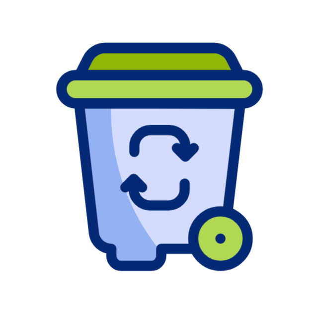
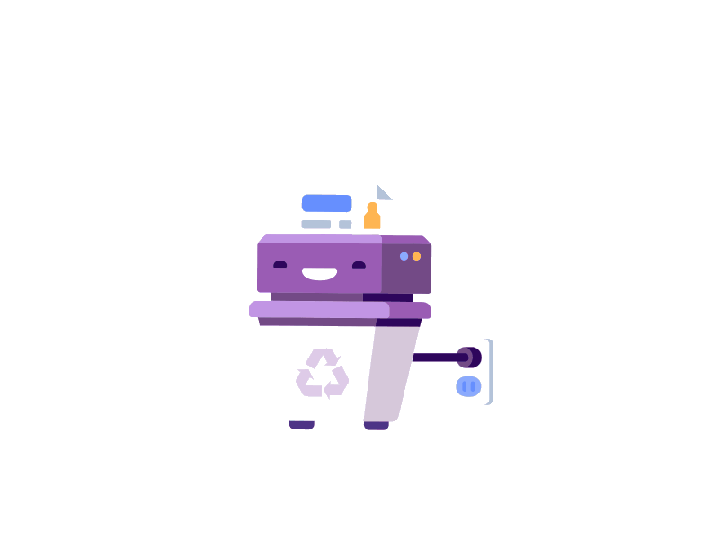
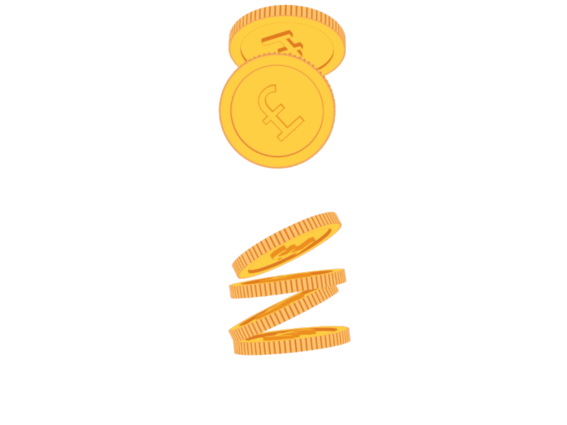

RecyShred
Turn Waste into Worth
Welcome to RecyShred
Our smart Recycling Bin rewards users with coins based on the weight of recyclable materials.
Go to DashboardHow It Works


Insert Material
Insert recyclable plastic bottles and cans.

Shred & Measure
The system shreds and measures the material.


Redeem Rewards
Check your dashboard to view your balance, and use the machine to collect your money.